go back
written on august 31st, 2021
hi everyone and thanks for taking the time to visit my website.
my understanding of social media these days is that, well, it's
all about self promotion. i tend to shirk this type of thing.
nevertheless, i spoke with my partner mary (caitlyn) about how
it's relatively common for those pursuing a PhD to have one, and
i needed something to write about. she said write about the home
renovations, so i guess that's what i'm going to do now.
we closed on a small house in the elmhurst neighborhood of
providence, ri halloween of 2016. i remember it was halloween
because we were not at all prepared for the onslaught of young
people coming to our door. i think we ran out of candy in literally
five minutes and had to turn off the lights/hide. below is the first
picture i have of the house, a couple days after.

looking back at the pictures, apparently the first project we
undertook was a good old fashioned basement demolition. when they
build the house, there were a number of diaphragms installed to
breakup the flow of the basement. more recently than the original
construction (1930s), someone had built a workout room with drop
ceiling, faux wood paneling, the whole nine yards. it didn't look
too hot, to put in gently. no problem, we got rid of the lath &
horse hair walls. beneath the surface of the workout room, there
was some very precarious electric wiring and a small bit of
water damage. goodbye jankiness!
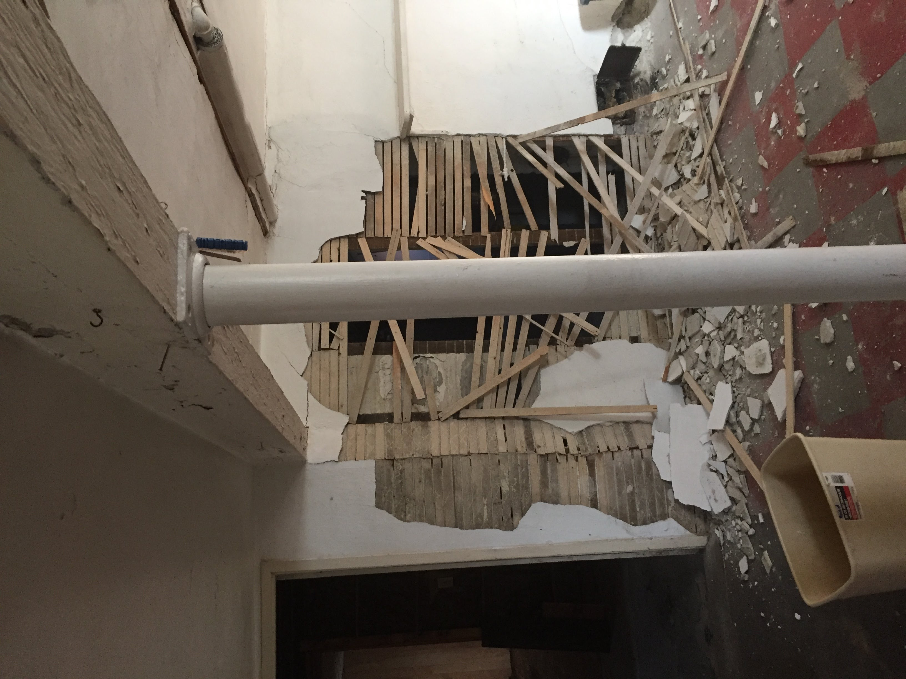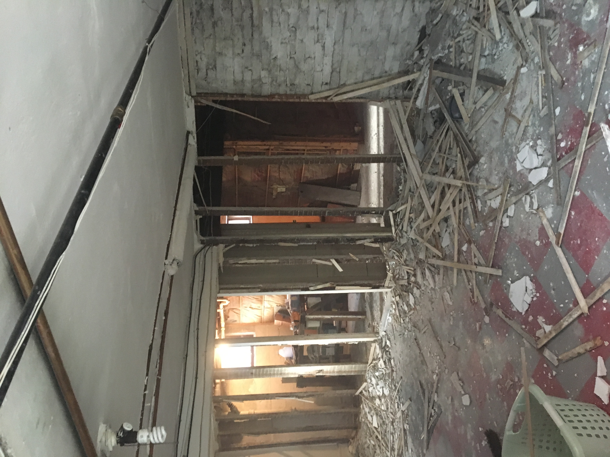
the next target was what we now refer to as the mudroom. as a
house ages, the soil beneath the foundation will move because
of the water cycle. this will cause the foundation to move.
at some point, the house settles, as did this one. when the
inspector looked at the house, he commented on the wood beam
running the length of the house and said that he's seen three
family houses sitting on top of a piece of timber like that.
good for us. it makes sense, too, because the neighborhood
was predominantly constructed all around the same time, and
designs were most likely pulled out of a sears catalog or
something of that nature. the foundation guys probably poured
a ton of them and then the framers just laid the same timber
for every foundation. this is just conjecture, but what else
am i to do seeing as i have not yet perfected my time machine.
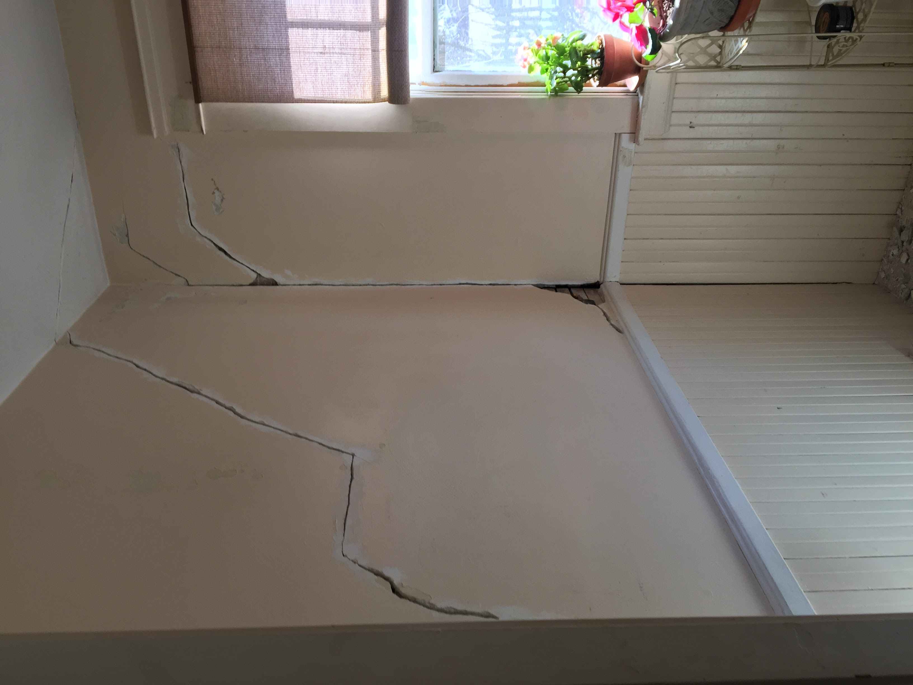
so yes, the house settled and one byproduct of this was some
nasty looking cracks in the plaster. i knew nothing of plastering
prior to the purchase of this home, but i feel relatively confident
with a taping knife these days. i cut out the plaster that was
falling out, installed plaster buttons, and then spent probably
too much time perfecting the tape job. taping as i refer to it
is just applying progressively thinner coats of joint compound (mud)
until you can't tell there was ever a crack there.
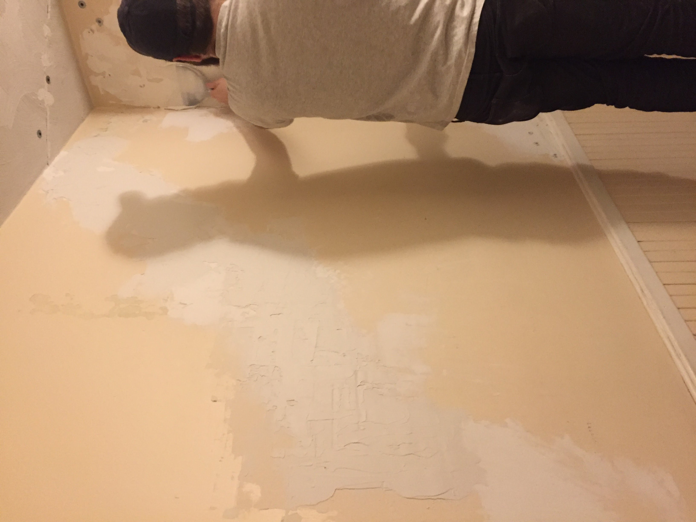
while that was going on, i got some help from my dad adding
some critical electrical infrastructure. we added a couple
of switches, a new light, but the major component was addition
of an exhaust fan to the sole bathroom in the house. i don't
remember what it was like before, but i'm glad i don't have to
live that way anymore.
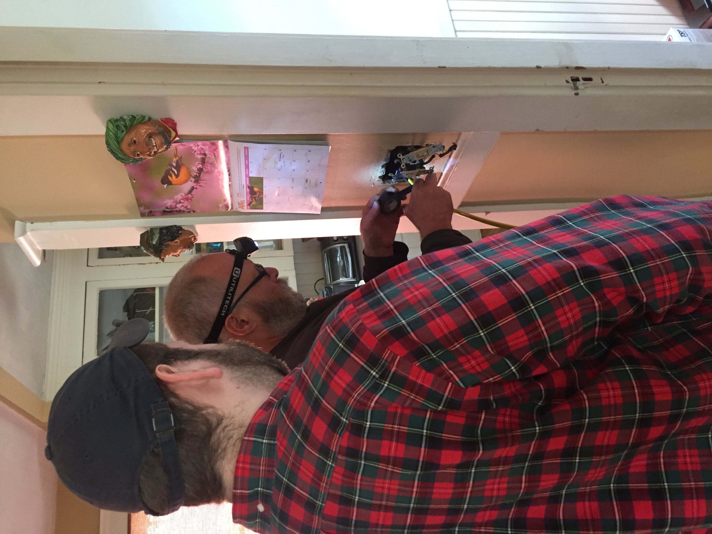
next up, we had a free tree (sponsored i believe by the city of
providence) planted in the front yard. looking at pictures from
before we owned the house, there was a big tree there but it
fell down. sad.
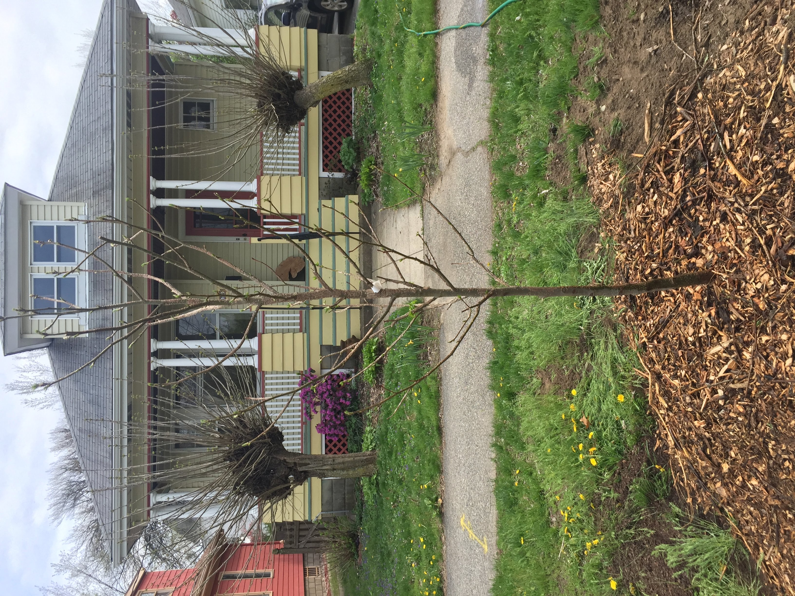
the basement and mudroom projects happened pretty much in tandem,
along with taking down a tree precariously placed right next to
our house. it was a small juniper tree. the stump is still there
if you want to see it.
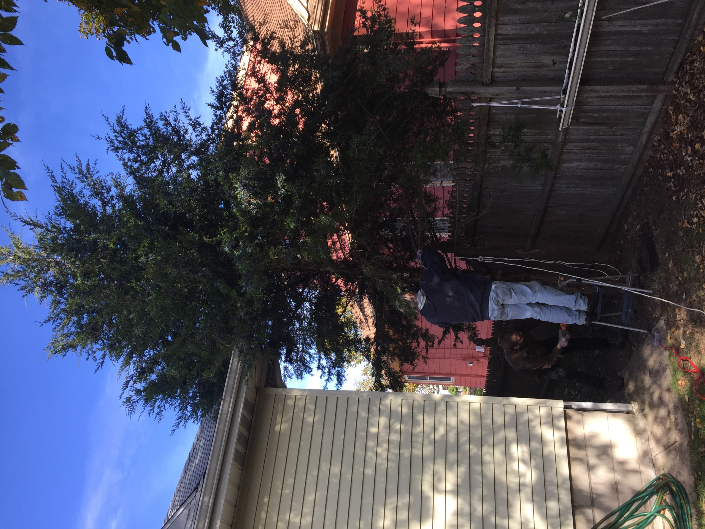
next up was the double living room. both rooms needed a new coat
of paint. for some reason, i chose a severe blue for the front
room and a more moderate gray from the farther back room. just
this past year, we actually went back & repainted the front room
gray. it looks better, and i'll probably drop a picture later on
down this post. the ceilings in both of these rooms were
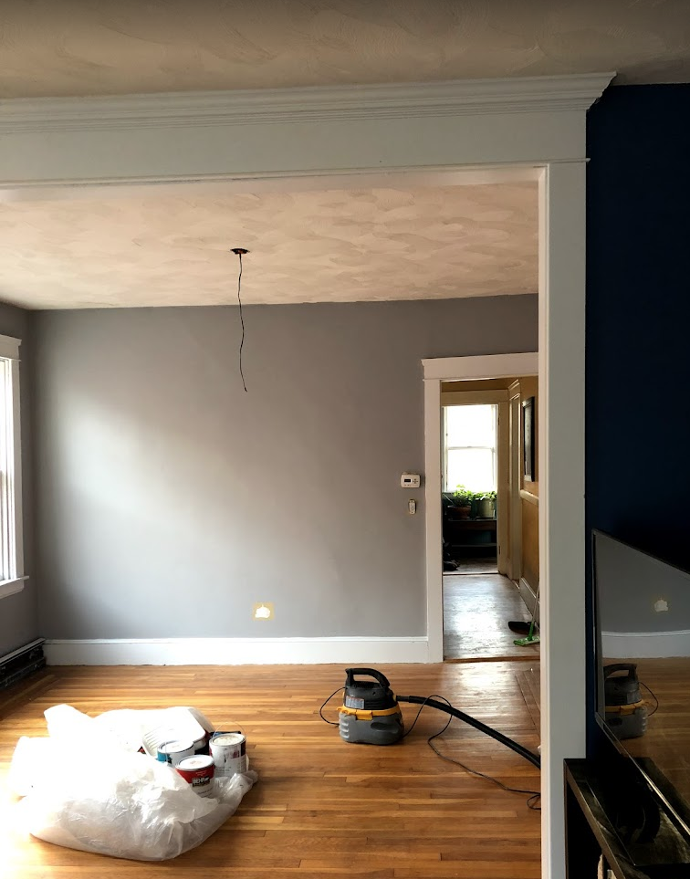
aesthetically impacted by the house settling. we had the idea to
install shiplap on the ceiling, as well as change the light fixtures
out for different ones. the ceiling was a big project, but now
as i sit in one of the very rooms it was installed in, i'm happy
we spent the time and money to get it together.
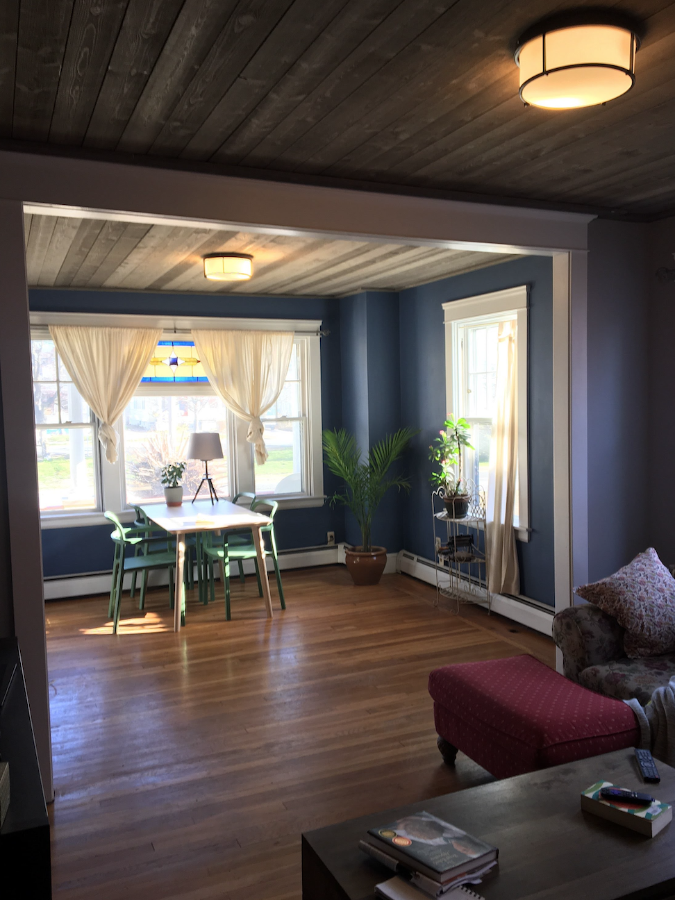
what i perceive now as probably the most challenging part of the
renovations was the removal of the flooring in the bathroom. it
was some kind of stuck on linoleum. now that i think of it, the
mud room actually had a similar linoleum-esque stuck on tile.
when you pull the tile off, there are small staples stuck in the
floor. there's no easy way to get those staples out except some
good old fashioned time on your knees and a hand tool. i remember
the bathroom took more than a day for a 10'x5' space and i was
listening to the album 'skylight' by pinegrove on repeat (please
don't cancel me).
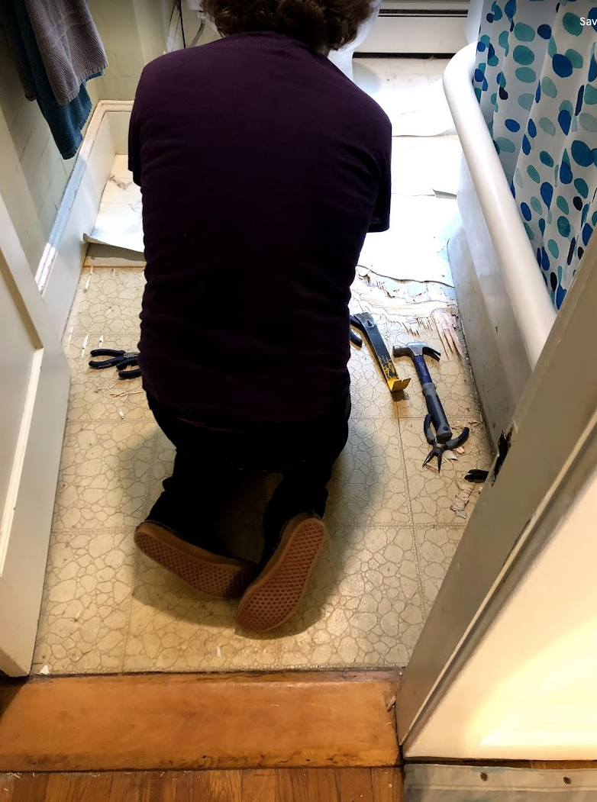
after removing all of the nails, i replaced the sink, the toilet,
the light fixtures, and added an outlet. the impetus for this
entire project was that when one sat down to use the toilet,
there was less than a foot of spacing between the sink and where
you sat. the sink was gigantic for some reason. so it had to go.
there was no outlet in there either, so using a non battery
powered trimmer or any sort of bathroom appliance was out of the
question. after that we painted, stained the floor and added a
new medicine cabinet.
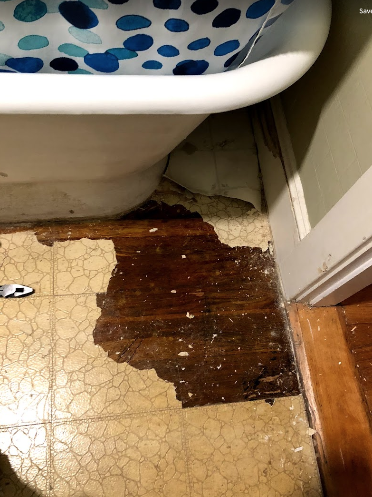
the last part of the project was something i used for the basis
of a class project. i applied a systems engineering methodology
to the project management, design, construction, and installation
of a set of shelves. i don't think that the professor was all
that impressed, but it gave me the opportunity to use some wood
clamps i had bought on facebook along with the router caitlyn's
dad gave me when they sold their place in portsmouth. i do not
unfortunately have the wood shop or man cave of my dreams at
this point. i would be grateful for even floors in the basement
at this point. it is what it is and i've tried to make due with
what i have.
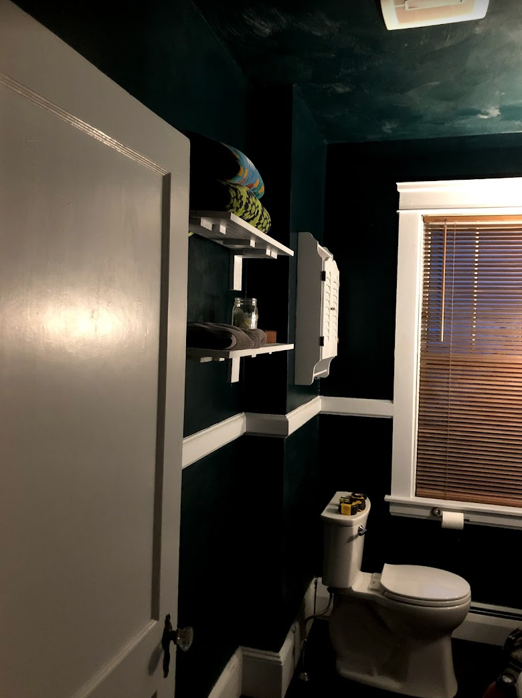
looking at the pictures it seems like the next thing we did was
install a raised bed made out of a reclaimed door. each raised
bed is made of one door. one cut down the middle, then cut each
piece in half. i think that's how it goes.
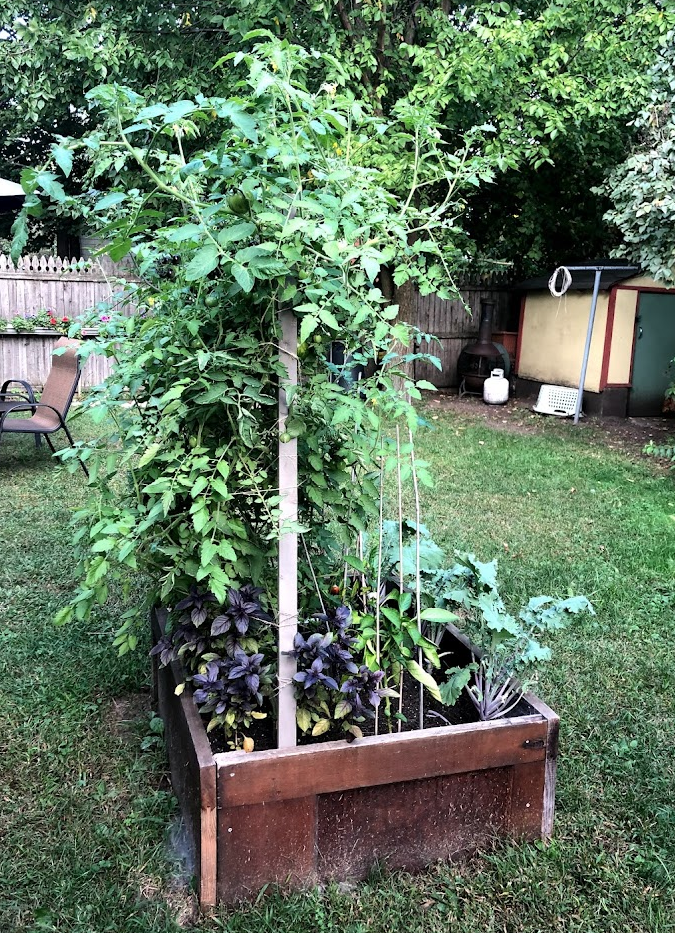
somewhere mixed in there, i performed repairs where necessary.
the washer fill switch broke. the dryer belt broke. the most
challenging repair was the tub. i had never used pipe dope
before this project. i had used pipe tape when i installed the
new sink in the bathroom though. that was a saga. i thought i
did it correctly, but i remember waking up in the middle of the
night hearing water running. i hadn't done the plumbing work
correctly. i've gotten better with that type of work, but i'll
sub it out if i have my choice.
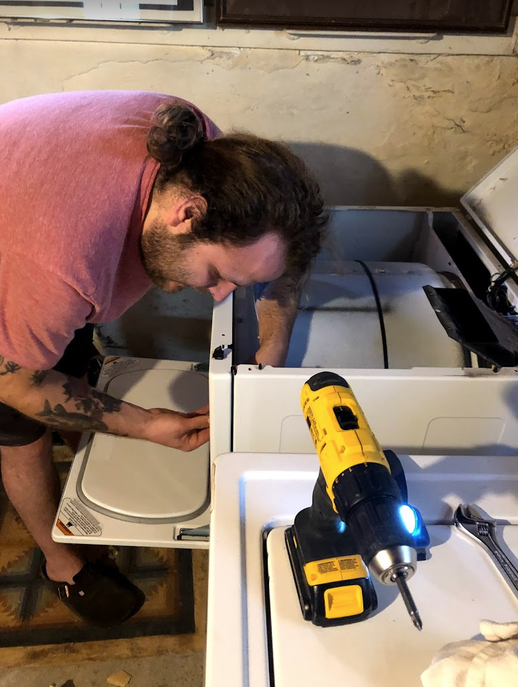
that reminds me of something i probably missed, and it was a
relatively big one. providence still has a lot of lead lines
going to the houses. not the mains from the reservoir so much,
but from the curbstop (where the main meets your house) to the
house. providence water had a no interest loan thing, so i
went for it. it's one of the silent improvements that i think
is worth the expense.
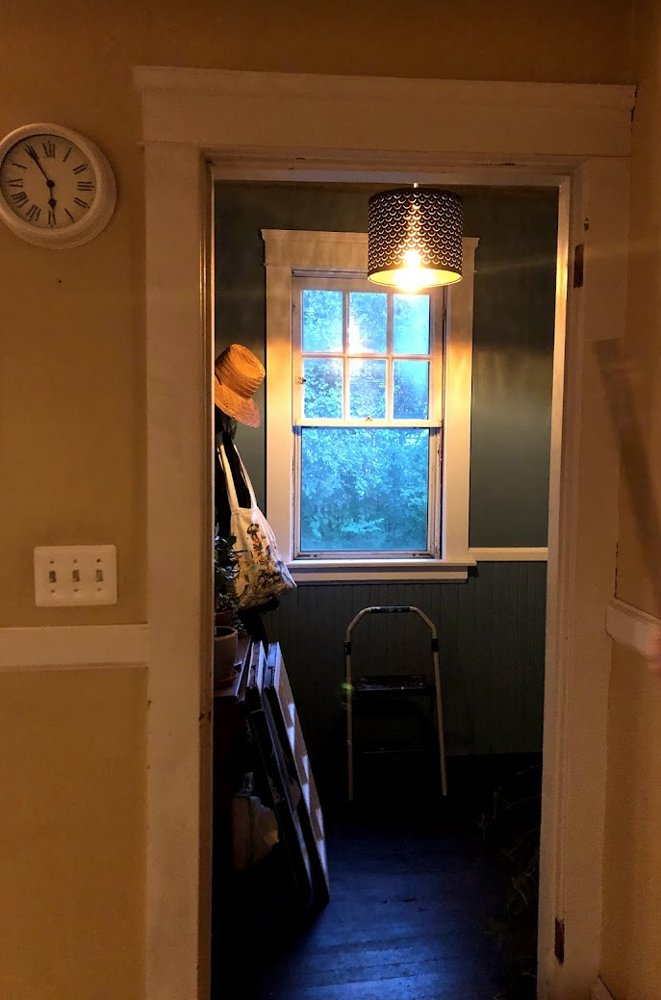
the other upkeep project was replacing window panes. the windows
are original wood, so they use glaze to insulation between the
sash and the windows. i went back & forth about replacing the
windows due to the propaganda about lead paint, but i ultimately
to this point have chosen to keep the windows. we don't slide
the windows up & down all that often as we use air conditioning,
so i'm not too pressed about chipping paint. if someone gave
me a great deal on wood windows, maybe i'd jump. to this point
i've come across nothing but snake oil salespeople.
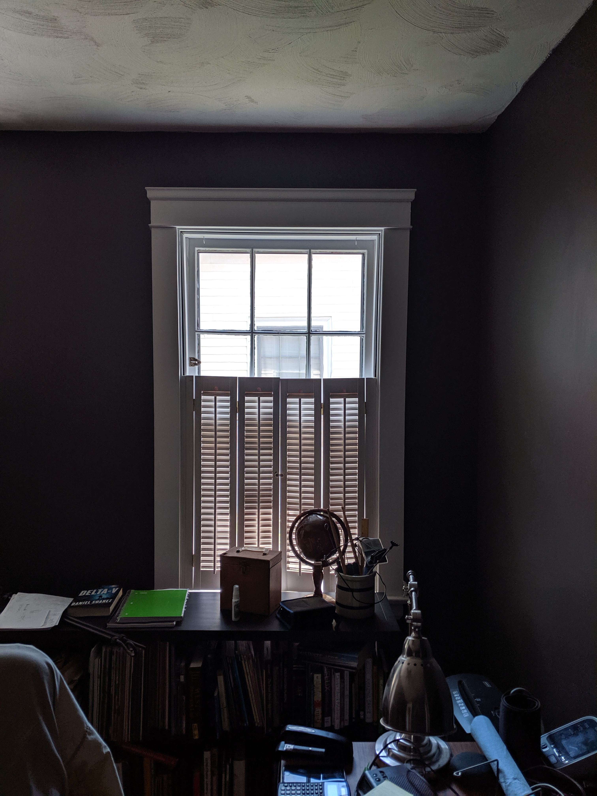
at some point, we painted the office a nice dark gray color. we
painted the bedroom as well. those were all relatively small
projects.
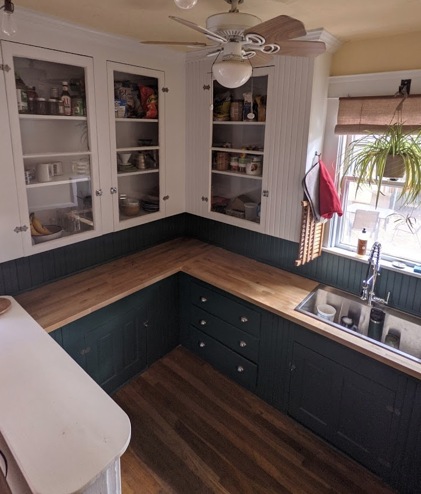 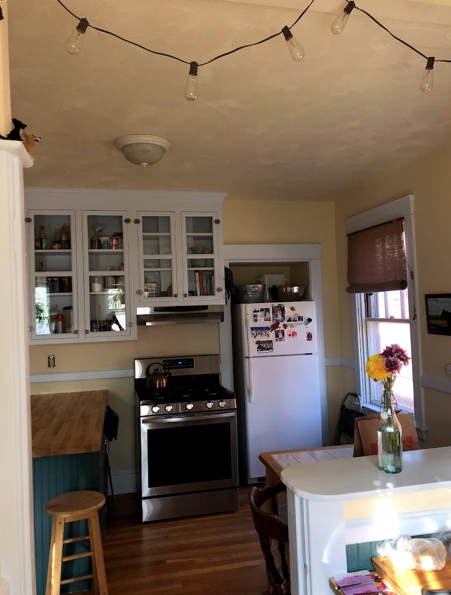
this year has been a big year for projects. we had been kicking
the can for awhile about painting the kitchen, because it was the
last part of the house that we hadn't really touched. we painted
the walls and the cabinetry, only to find that the mismatched
countertops looked horrible. in a relative windfall, we ordered
a new much larger sink, bought butcher block countertops, and
installed them ourselves! i was really worried about the plumbing
for the sink, but it turned out to be a cinch. fortunately for
me, the connectors were in good shape and a common size. we also
installed a new shelf, and around the same time a coat rack for
the mud room.
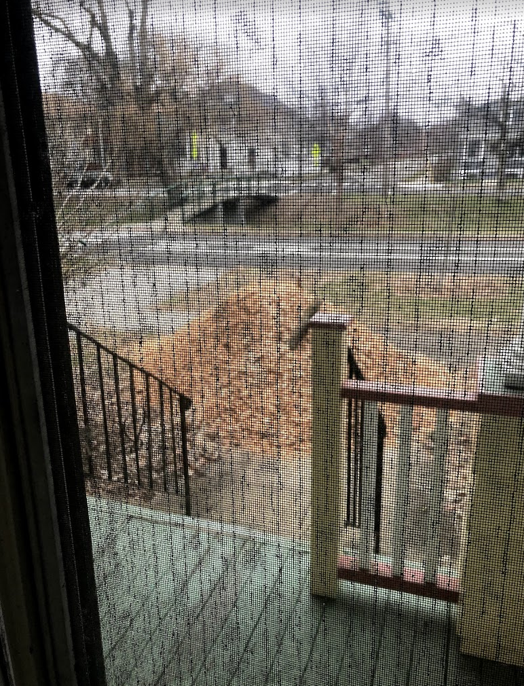
finishing up the interior, we set our sights on exterior projects.
caitlyn found this app where you get paired up with tree service
companies that are looking to get rid of their mulch, and they
drop off a delivery for free. the only catch is that you can
end up with a ton of mulch. like, way more than you need. she
signed up, and within twenty-four hours had a delivery in our
front yard. we didn't own a wheelbarrow at that point, so one
of us was rolling a yard waste can, and the other one carrying
a can front the front yard to the back.
that rounds up the work that we did predominantly ourselves, but
not the end of the story. the fence was pretty beat when we moved
in, and had devolved to a worse place over the duration of our time
living here. we decided to go through an app and hire someone to
do that work. they also took down a crummy shed we had.
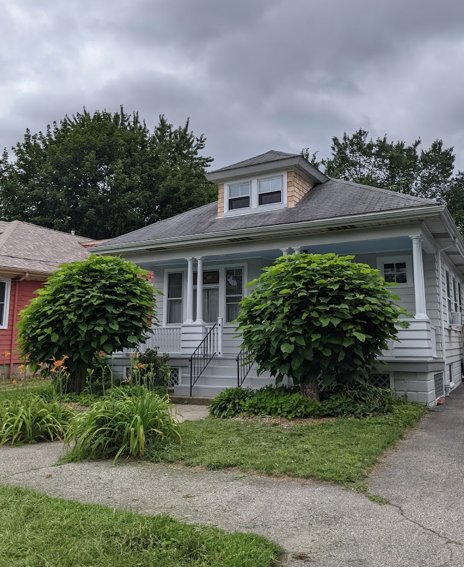
the final and probably most apparent part of the renovation started
with painting of the deck. just before the start of the summer, we
got it in our heads to finally do something about the circus vibe
the house had. yellow vinyl, green pink and white paint. it was
painful to look at every time we got home. we planned to leave the
vinyl because it was for the most part in good shape, but some pieces
admittedly became brittle and cracked. we started prep work ourselves
for the front porch, but realized it was more of a project than we
wanted to take on ourselves. we hired someone who came out and did
a first coat on the porch. at the end of the day, we went and looked
at it and had the same reaction to when we painted the kitchen. the
new coat of paint made the vinyl look much worse. the painter and i
looked at what was underneath the vinyl siding. they seemed to think
that what was underneath was good wood clapboard. we took a peek and
it was not just good old wood but in mostly great shape. i told them
to stop working because i wanted to take all of the siding off.
the next day, a hot saturday, caitlyn and i took down almost all of
the vinyl siding that could be easily reached by a ladder without
going near the electrical service wires or out on the roof. the siding
looked great except for where blow-in insulation was installed. when
the installers came out, they pulled off the vinyl siding but used
a hole saw to drill through the wood. it still pains me to think about.
no big deal, i called up a lumber company and got new cedar clapboard.
i installed the wood myself without a problem, even the odd angled
connection points at the edges of the house. i'm still proud of those
cuts!

we called up the electrical company and had them turn the power off.
that allowed me to get up near the wires and take the rest of the
siding down. the same day i did that work, i went up on the roof to
remove the siding around this little bump-out in the attic. i think
i must either be afraid of heights, working on a ladder, falling,
or just have a strong sense of self-preservation. or maybe it's just
that the pitch of the roof is too severe. whatever it was, being
up on the roof pulling off siding was a scary but enlightening
moment for me. i had mentioned to caitlyn that i wanted to put shingles
on the bump out as kind of an accent. i wanted to do the same for the
upper rear of the house as well, near the eaves. when we removed the
siding from the bump out, it turned out that there were in fact
shingles! this confirmed my idea, and it also made me realize that i
was going to need to call for help. i ended up hiring a contractor
out of newport who had a couple free weeks. he and a small crew prepped,
removed the old shingles, installed new shingles, added new trim around
the windows, and painted the entire house. we think it looks great.
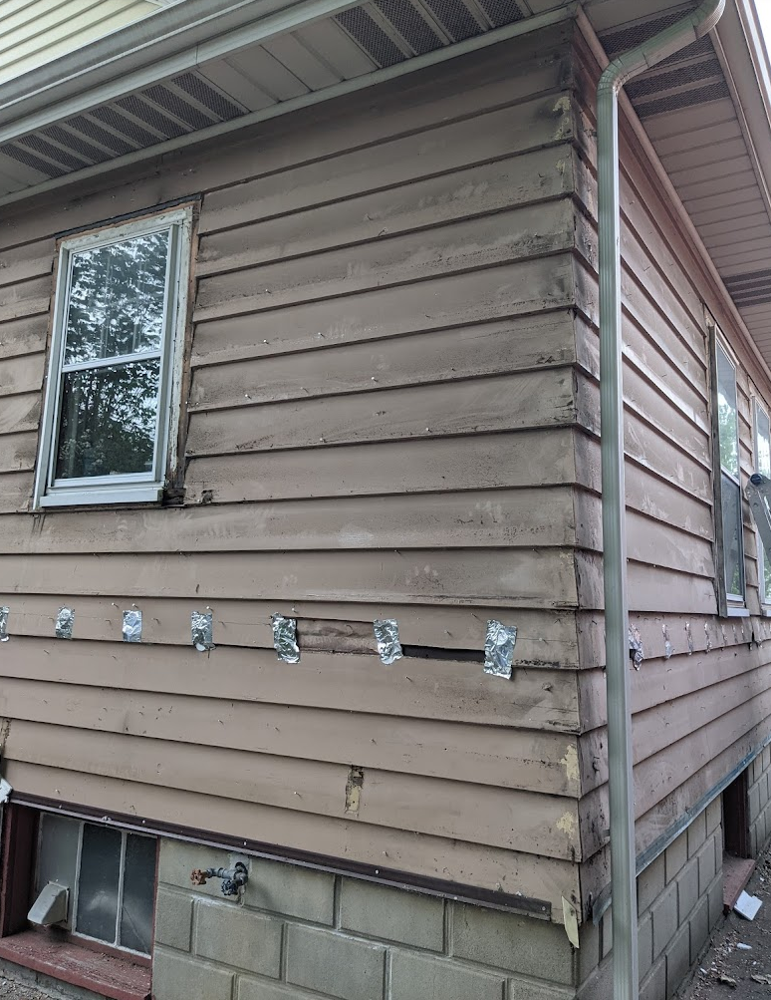
that brings us up to today. yesterday we finally got another load of
mulch. it was mu(l)ch more than the first go around. haha, that was
a landscaping joke. laugh with me please...
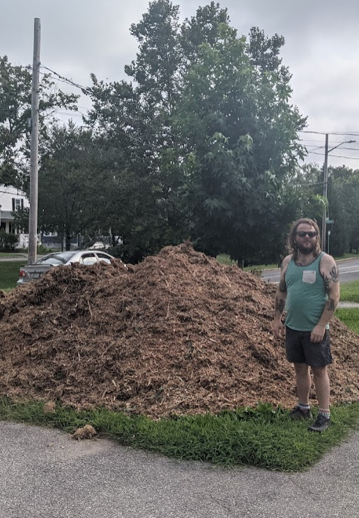
we have been tossing around the idea of an hvac system. big picture,
we've considered remodeling the basement or adding a second floor.
installing air conditioners every year is a pain and they're ugly.
both projects are larger ticket projects. we've also considered
moving. being in a place of flux is something i've had to get used
to. smaller picture, we'd like to change out the backyard lights
and add an outdoor outlet in the front. we'd like a fancy doorbell,
too. maybe soon!
that pretty much wraps things up here. i should mention that aside
from caitlyn and maxwell (the dog), we added a cat (margot) and
another dog (millie) to the squad. we have fun. if you made it this
far and you aren't a family member, thanks. i hope it wasn't too
painful. idk if i'll go back and check for typos. i wrote this in
text edit and now i have to go format it for a website. i've been
trying to figure out how to host my own blog using open source
software. i want to use a specific infrastructure but i'm running
into a brick wall. hope all is well with you wherever you are.